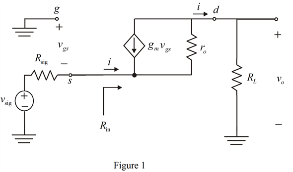

From the circuit, the input resistance is,
Apply nodal analysis at  .
.
 …… (1)
…… (1)
From the circuit, the output voltage is,
Refer to Figure P7.31 for the circuit.
(a)
The small signal equivalent circuit is shown in Figure 1.

From the circuit, the input resistance is,
Apply nodal analysis at .
…… (1)
From the circuit, the output voltage is,
Substitute  for
for  in equation (1).
in equation (1).
Substitute  for in the equation.
for in the equation.
Thus, the input resistance is,  .
.
(b)
From Figure1, the voltage  is,
is,
Substitute for  in equation (1).
in equation (1).
 in the equation.
in the equation.
Simplify further.
Thus, the voltage gain is, .
(c)
The intrinsic gain is,
Substitute  for and
for and  for
for  in the equation.
in the equation.
Consider the equation for input resistance of the circuit.
Substitute  for
for  ,
,  for
for  , and
, and  for
for  in the equation.
in the equation.

Thus, the input resistance is, .
Consider the equation for voltage gain of the circuit.
Substitute  for
for  ,
,  for
for  ,
,  for
for  and for
and for  in the equation.
in the equation.
Thus, the voltage gain is, .